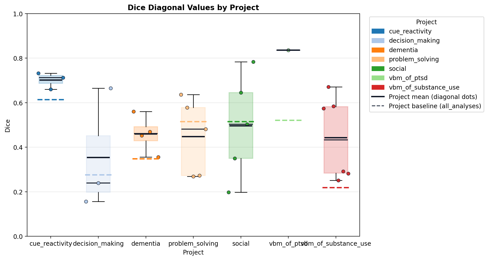
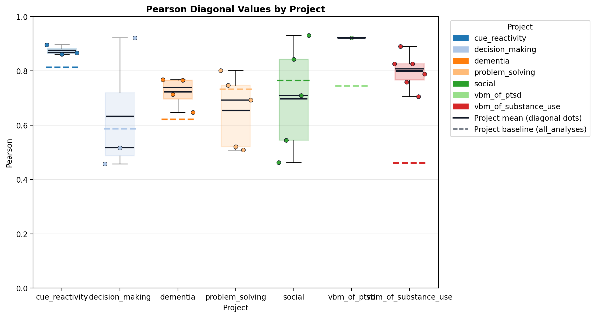
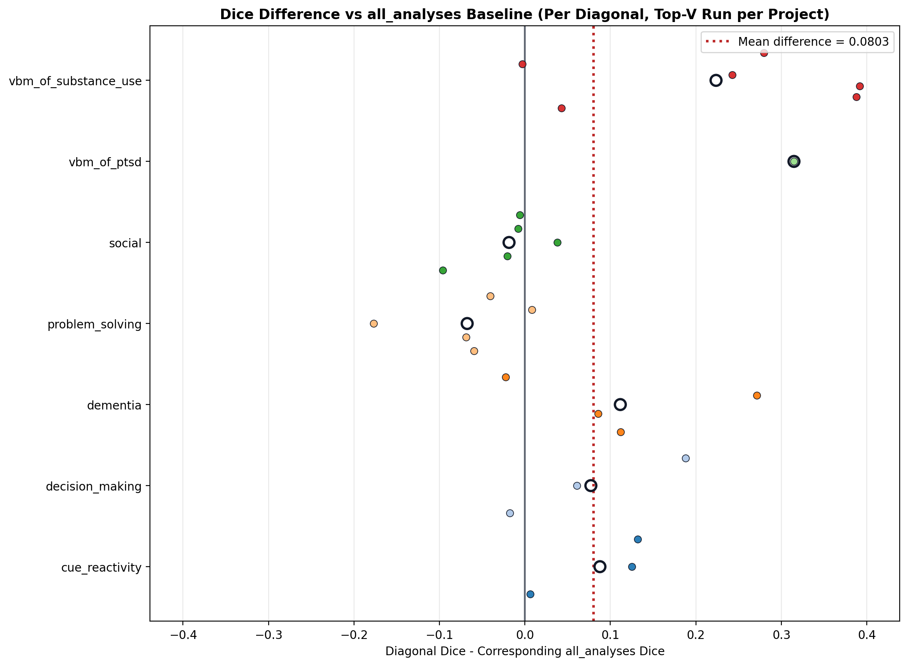
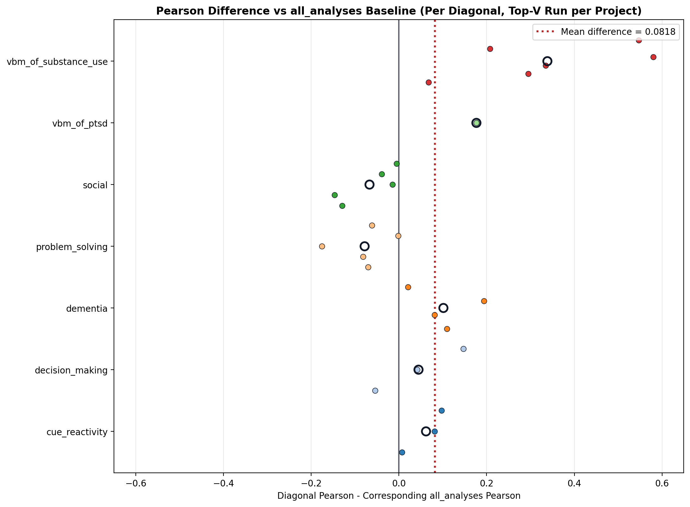
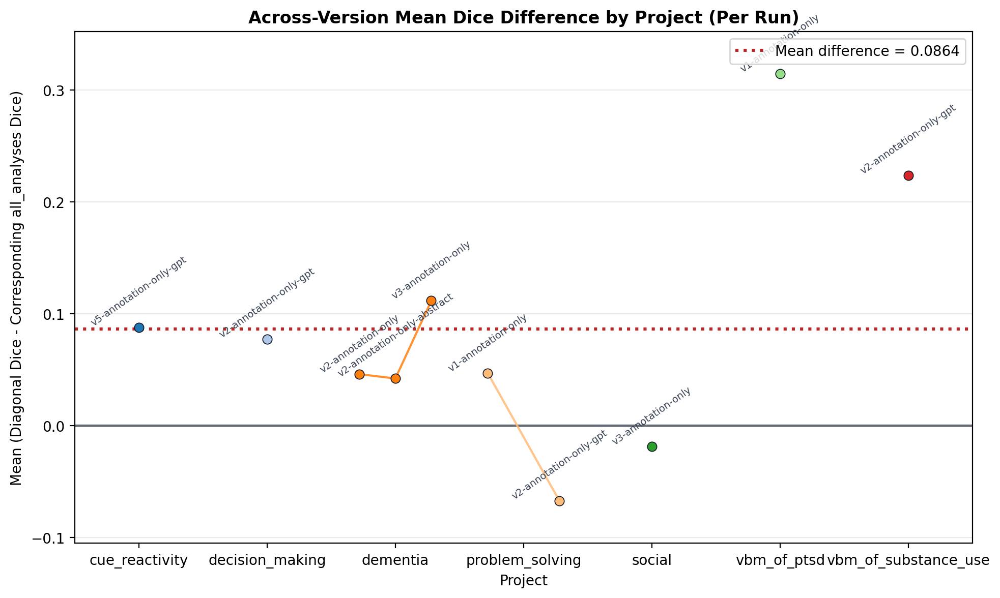
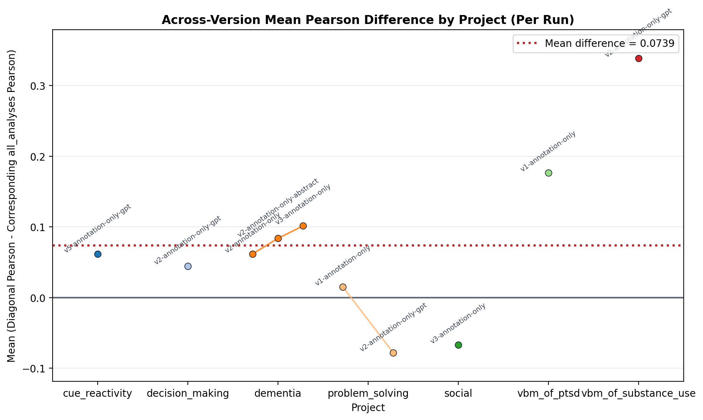

Generated at 2026-05-06T21:01:38.839114Z.
| Project | Status | Reason | Eligible Runs | Fair IDs | Manual Meta | Compare | Project Report | Compare Log |
|---|---|---|---|---|---|---|---|---|
| cue_reactivity | success | completed | 1 | 144 | cached | success | manual_vs_auto_meta_report.html | compare log |
| decision_making | success | completed | 1 | 53 | cached | success | manual_vs_auto_meta_report.html | compare log |
| dementia | success | completed | 3 | 39 | cached | success | manual_vs_auto_meta_report.html | compare log |
| executive_function | skipped | no eligible annotation-only runs after validation | 0 | 0 | not_run | not_run | missing | missing |
| problem_solving | success | completed | 2 | 63 | cached | success | manual_vs_auto_meta_report.html | compare log |
| social | success | completed | 4 | 134 | cached | success | manual_vs_auto_meta_report.html | compare log |
| template_ | skipped | template project is not a real run target | 0 | 0 | not_run | not_run | missing | missing |
| vbm_of_ptsd | success | completed | 1 | 10 | cached | success | manual_vs_auto_meta_report.html | compare log |
| vbm_of_substance_use | success | completed | 1 | 53 | cached | success | manual_vs_auto_meta_report.html | compare log |
| Project | Run | Dice Mean Diagonal | Pearson Mean Diagonal | Dice Baseline (all_analyses) | Pearson Baseline (all_analyses) | Dice Mean Off-Diagonal | Pearson Mean Off-Diagonal | N Rows | N Cols |
|---|---|---|---|---|---|---|---|---|---|
| cue_reactivity | v5-annotation-only-gpt | 0.7018 | 0.8751 | 0.6141 | 0.8133 | 0.5650 | 0.7592 | 6 | 3 |
| decision_making | v2-annotation-only-gpt | 0.3536 | 0.6321 | 0.2765 | 0.5873 | 0.2230 | 0.4694 | 6 | 3 |
| dementia | v2-annotation-only | 0.3883 | 0.6779 | 0.3423 | 0.6160 | 0.3223 | 0.5970 | 7 | 4 |
| dementia | v2-annotation-only-abstract | 0.3903 | 0.7059 | 0.3482 | 0.6219 | 0.3300 | 0.6160 | 7 | 4 |
| dementia | v3-annotation-only | 0.4598 | 0.7234 | 0.3482 | 0.6219 | 0.3369 | 0.6292 | 7 | 4 |
| problem_solving | v1-annotation-only | 0.5719 | 0.7572 | 0.5249 | 0.7420 | 0.4641 | 0.6625 | 8 | 5 |
| problem_solving | v2-annotation-only-gpt | 0.4477 | 0.6544 | 0.5153 | 0.7325 | 0.3938 | 0.5985 | 8 | 5 |
| social | v3-annotation-only | 0.4961 | 0.6980 | 0.5146 | 0.7650 | 0.3905 | 0.6327 | 8 | 5 |
| vbm_of_ptsd | v1-annotation-only | 0.8355 | 0.9221 | 0.5208 | 0.7453 | 0.5208 | 0.7453 | 4 | 1 |
| vbm_of_substance_use | v2-annotation-only-gpt | 0.4425 | 0.7992 | 0.2189 | 0.4606 | 0.1117 | 0.2944 | 9 | 6 |
| ALL_PROJECTS | TOP-V SUMMARY | 0.5339 | 0.7577 | 0.4297 | 0.6751 | n/a | n/a | 7 | n/a |
Primary summary metrics are mapped diagonal means. Off-diagonal excludes mapped diagonals and the all_analyses baseline row.
Bottom row aggregates one top-V annotation-only run per project and reports diagonal means versus mean all_analyses baselines.
Chart views below use one run per project by default: the highest-numbered annotation-only run (with deterministic tie-breaking).





